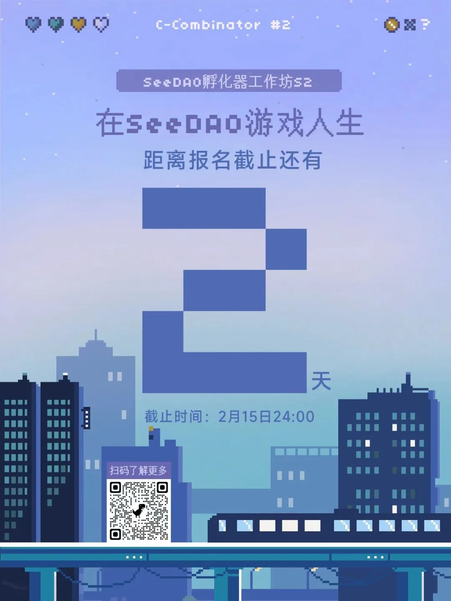

SeeDAO｜DeSci：去中心化科学运动
作者: Hanson
发布时间: 2023-02-13 15:31:26
探索区块链技术和社区代币化的潜力，将学术研究提高到新的水准。
Covid-19 时代让我们对人类处理巨大危机的能力产生了怀疑和恐惧，因为每分每秒都有大量的人走向死亡。 社会实践也发生了变化，“隔离”和“社交距离”被添加到我们的词典中。 科学家们日以继夜地工作，为我们中断的生活方式寻找解决方案。
这些挑战同时也伴随着一系列的教训，让我们不得不重新思考我们对于开展研究的认知。时间和金钱是否被有效利用？有关于疫情的信息是否被有效地传递给公众？新冠疫情让我们不得不思考一个比疫情本身重要的问题：我们学术研究的基础设施是否达到了应有的效率？
学术研究目前面临着大量的问题，包括沟通效率低下、资金缺乏、决策偏见、核心原则缺乏等。相较于那些能挽救人们生命的研究成果而言，金钱和时间的那一套管理方法是无效的。每年，因为科学研究没有发表，或是没有与科学界其他人士交流而浪费的金额达到数十亿美元。研究人员本应利用自己的知识和创造力来解决世界上最重要的问题，却发现自己花了几个月甚至几年的时间来写资助计划书或筹集资金。
政府资助的拨款和极少数顶级期刊对于大多数科学界人士有着近乎绝对的影响力。事实上，五家期刊占据了价值 190 亿美元的学术出版业市场 50% 以上的份额。
阻碍学术研究的不仅仅是一两个小问题，而是目前的系统需要进行结构性的改变。社会挑战和学术界不断扩大的探索领域要求我们加快研究的步伐，因此科学家能够拥有满足这些需求的基础设施和支持是至关重要的。去中心化科学（DeSci）运动正在进行的实验，即通过将不可篡改的区块链技术和代币化的社区融入科学研究，或许是释放这种潜力的关键。 世界上有太多的科学研究从未被发表，要么是因为“没有结果”，要么是被付费墙的门槛阻拦，又或者只是单纯地没有触达到预期的受众。 也正因为如此，价值数十亿美元的研究经费被浪费，因为在世界的另外一个地方已经开展过这项研究。 各种研究和像冷泉港实验室这样的高效研究环境的例子表明，当科学家能够与本领域内或其它领域的研究人员进行交流时，研究会更加富有成效。 但是，除了同事或者已存在的联系人之外，科学家们结识同行的主要方式是通过会议等活动，这些活动通常每年或每两年举行一次，而且通常只集中在特定的领域。 如果科学家们能够认识来自世界各地其他领域的人，他们就可以努力把他们在微观层面上不同的专业知识集合在一起，优化他们的技能和资源。此外，一些实验室缺乏昂贵的设备，这限制了他们开展特定项目的能力。对此，LabDAO 提出了独家解决方案 LabExchange，这是一个由 DAO 管理的、点对点的数据生成实验室服务 。通过他们的项目，一位印度的科学家可以招募一位挪威的科学家来开展一个实验室规程，并且只需支付少量费用。印度科学家可以省钱，因为她不再需要购买可能只用几次的实验室设备，双方都在经济上受益，同时建立了宝贵的全球联系，也带来了未来潜在的伙伴关系。 此外，DAO 和区块链数据平台使科学家能够更多地了解当前世界各地发生的研究和项目。不可篡改的账本技术使科学家能够与他人分享想法，而不必担心被复制或窃取，因为区块链创造了一个可信的记录，记录了哪些项目和想法是先于其他的。目前该领域的 DAO，如 LabDAO，最终旨在创造一个 “开放的实验室” 环境，以加速生物科学的发展，类似于开源如何改变了信息技术发展。 通过 DAO 创建的在线社区，与其他学术专家的交流也不再局限于年度会议。从前，科学家可能需要广泛地寻找合适的伙伴和资源，还需要承担验证他们是否是可靠来源的责任，以便进行交流。然而，为科学工具和服务专门建立的 DAO 和市场协议可以帮助科学家以安全、及时和透明的方式找到他们需要的团队和资源。DAO 和区块链可以让科学家打破地理界限，创建现代化的全球实验室团队，优化世界各地科学家的专业知识。
科学家的职业生涯取决于他们成功发表的论文数量和期刊级别。可悲的是，许多科学家要么得不到资助，要么因为一小群人的决定而无法发表文章。虽然这群人是他们所在领域的专家，但在学科整体进步或对其受益者最有利的方法这一问题上，可能并不代表该领域的其他专家和研究人员的看法。在资金分配方式上，也出现了各种偏向性。比如，美国国家卫生研究院认识到系统性种族主义会影响到拨款的方式，并指出“黑人研究人员的资助率几乎只有白人研究人员的一半” 。 VitaDAO，一个专注于长寿研究的项目，已经探索出了可以缓解这种情况的方法。通过 VITA治理代币，由社区的参与驱动他们基于代币的生态系统。通过他们的三步治理模式，包括通过 Discord 提出想法，通过 Discourse 进行讨论，以及通过 Snapshot 进行投票，VitaDAO 允许社区推动关于 DAO 范围内的项目和资金分配的决定。对项目想法进行投票的社区由科学专家、研究受益者（病人）和其他重要的利益相关者组成。与传统的社区相比，这种模式的美妙之处在于，DAO 的智能合约技术使社区拥有一个由社区管理的金库，能够在没有中央机构的情况下安全地分配社区筹集的资金。无论是资助研究还是为病人提供免费服务，社区都可以决定如何使用他们的钱。人们不再只是身为利益相关者被相同的利益绑定，他们还共同承担着决定什么是对他们社区最好的责任。 在科学领域，基于代币的生态系统的各种可能的应用方式还有待发现。代币可以帮助建立系统，例如科学家的声誉系统，在这个系统中，科学家如果做了重要但以前无利可图的任务，如同行审评，就可以得到代币奖励。这些代币可以成为其他人对科学家的可信度或专业知识的一种衡量方式，甚至可以作为科学家根据他们的贡献在学术组织中投票的一种方式。由区块链驱动的代币化为治理和社区参与开辟了一条全新的途径，既透明又安全。
研究工作一般由纳税人的钱资助，以政府拨款的形式从美国国家科学基金会或国家卫生研究院等组织中获得。 然而，获取资助是一个繁琐而困难的过程。 准备每一份新的提案大约需要 38 天； 如果重新提交，还需要再增加 28 天。 即使花了这么多的时间来写提案，大多数研究人员也无法获得资助。 因为资助通过率相当低，例如 2017 年的资助率就小于 25 %。 一些学科得到的资金分配相比于其他学科多得多，这取决于整体的紧迫性和可影响的人数。这可能会导致科学家不得不根据获得资助的情况来选择研究课题和项目，而不是选择他们想要研究的内容，或者对人们有益的内容。这给科学的执行方式引入了很多偏见。许多研究领域，如消化系统疾病，得到的资金较少，大约只有 24 亿美元，而像遗传学这样的领域则可以获得大约 110 亿美元。于是，更多的研究人员会倾向于选择有机会获得更多资金的科学领域或主题。 为了弥合这个 “死亡谷” ，基础研究和临床研究之间缺乏资金的情况，MoleculeDAO 引入了 IP-NFTs。IP-NFTs是一种保护知识产权的法律合同，与基于智能合约的非同质化代币相结合。在 Molecule 的市场里，研究人员（卖方）可以得到投资者（买方）的资助，这样知识产权的权利就可以转移给买方——所有这些都是通过一笔单一的区块链交易完成的。此模式的一位早期采用者就是 VitaDAO，他们向 Scheibye-Knudsen 实验室出资25万美元，并通过 IP-NFT 获得知识产权作为回报。这种筹资方法使公众能够成为筹资过程的一部分，而不是使筹资只限于政府拨款或由大型制药公司主导的研究购买。最后，当作为 IP-NFT 的潜在买家的 DAO 与他们的 IP-NFT 进行任何进一步的交易时，他们赚到的钱通常又会用于购买更多的 IP-NFT，从而资助更多的研究，这与 VitaDAO 的模式类似。 IP-NFT 资助方式有望与目前政府资助的研究共存，以确保多种多样的科学研究都可以得到资助。从前因被忽视而经常缺乏资金的的研究领域，例如一些罕见的疾病，也因此不再需要争夺资金。
去中心化科学，特别是代币化的科学生态系统经常面临的批评是：它的某些方面，如参与同行评审赚取代币，过于 “游戏化” ，可能会剥夺科学家的责任感。然而， “科学家的责任”并没有明确的定义。例如，当被问及他们对一项重要的、但往往无利可图的服务进行同行评审的动机时，40.8 %的研究人员认为同行评审是他们职责的一部分。其他研究人员进行同行评审的动机是为了了解当前的科学文献，确保研究的质量，或者为了回报他人对自己工作的评审。 一篇论文指出，科学家在 2020 年为同行评审 “捐赠” 了约 1 亿个小时，收到的捐赠金额为 10 亿美元。尽管花费了如此多的时间进行同行评审，但这一过程还是被该领域的许多专家认为是 “不完整的” ，因为它的效率很低。例如，期刊要求审稿人在大约 3 至 4 周内完成任务，但他们却无法以任何方式强制执行以上的要求。此外，基于一系列实验的研究表明，这些审查往往是非常不一致的、缓慢的、且存在偏见的。 像这样的科学传统流程已经存在了很长时间，并开始被认为是科学家职责的一部分。然而，试图维持这种 “传统” 而不试图改变系统的代价是效率低下和质量缺乏。尽管在一些人看来，代币化或区块链平台带来的变化可能是“游戏化”的，但它可能是一种新颖而有效的方式，可以强化科学的基本原则，例如同行评审。 在去中心化的研究环境中，另一个可能的挑战是拥有大量资本的少数参与者在某些科学领域获得过多的影响力。例如，在 VITA 投票过程的第三阶段，社区成员在 Snapshot 投票，一个 VITA 代币等于一票。从本质上讲，投票权取决于一个人持有的代币数量，这些代币通常是通过购买或为该组织工作获得的。在这样的情况下，人们担心的是，如果一个人或一个单一实体购买了大量的代币，他们则可以利用这种权力来影响决策。在 VitaDAO 的场景中，他们行事谨慎，限制了每个地址的代币数量，在三个阶段进行投票，其中只有最后一个阶段需要代币来投票，并允许根据社区的意见对治理过程进行修正。 去中心化的科学平台仍然处于发展的早期，有很多方面还没有拼凑起来。像 DeSci 实验室的联合创始人 Philipp Koellinger 教授这样的建设者意识到了代币经济对于科学的重要性，但他们也认识到，通往它的道路将是缓慢的，因为代币经济模型必须是非常周密的。随着去中心化的科学社区将共同创建适合学术界的代币经济模型，他们可以努力避免巨鲸通过其财力获得过度权力的情况，无论是通过限制人们可以购买的代币比例，还是学习 VitaDAO 的模型，将每一个无需代币的投票阶段落实到位。
随着技术和法规的发展，用 DAO 和代币资助研究，并创建专门的 DAO 与政府和大学协同工作并应对科学挑战，这些都是去中心化科学的可能的落地方案。区块链有可能革命化地改变科学：它可以创造工具，帮助现有的研究人员更有效地合作和资助研究，也可以创造一种新型的研究小组，补充和改善目前的研究基础设施。 LabDAO 的 Niklas Rindtorff 将网络原生科学堆栈描述为资金、执行和分配的三步过程。VitaDAO、LabDAO 和 MoleculeDAO 等各种 DAO 都符合这三层中的某个环节，并有可能引领这一新生运动。区块链和代币化经济带来的科学流程创新还有很长的路要走，但关键是要妥善管理和支持。实施过程将是一个巨大的挑战，但它有可能改善现有学术研究基础设施的许多缺陷。 来源：
https://www.ncbi.nlm.nih.gov/pmc/articles/PMC8164884/
https://www.youtube.com/watch?v=-DeMklVWNdA&ab_channel=CoinMarketCap
https://research.ibm.com/downloads/ces_2021/IBMResearch_STO_2021_Whitepaper.pdf
https://www.youtube.com/watch?v=0fMamb3T-aU&list=PLhuBigpl7lqvMt8d7h4sbCmra9KbFmAdg&index=11&ab_channel=ProtocolLabs
https://report.nih.gov/funding/categorical-spending#/
https://undsci.berkeley.edu/article/who_pays#:~:text=Most scientific research is funded,Packard Foundation%2C etc
https://bmjopen.bmj.com/content/3/5/e002800 https://www.apa.org/monitor/2021/11/career-grant-writing#:~:text=In 2017%2C the National Science,around 8%25 to 10%25. https://report.nih.gov/funding/categorical-spending#/
https://transmedcomms.biomedcentral.com/articles/10.1186/s41231-019-0050-7
https://www.molecule.to/blog/molecules-biopharma-ip-nfts-a-technical-description
https://www.molecule.to/
https://discover.molecule.to/
https://twitter.com/paulkhls/status/1427724533713326082
https://www.youtube.com/watch?v=OsAr7uzUw0s&list=PLhuBigpl7lqvMt8d7h4sbCmra9KbFmAdg&index=25&ab_channel=ProtocolLabs
https://researchintegrityjournal.biomedcentral.com/articles/10.1186/s41073-021-00118-2
https://www.vitadao.com/
https://www.labdao.xyz/
https://docs.labdao.xyz/labdao/mission
https://grants.nih.gov/grants/understanding-nih.htm
https://www.ncbi.nlm.nih.gov/pmc/articles/PMC1420798/
https://editorresources.taylorandfrancis.com/managing-peer-review-process/
https://cointelegraph.com/magazine/2022/04/15/desci-tokens-help-improve-scientific-research 作者：Esha Bora
译者：Hanson
校对：wonder
排版：Qiao
封面图来源于网络，如有侵权，请联系删除。
